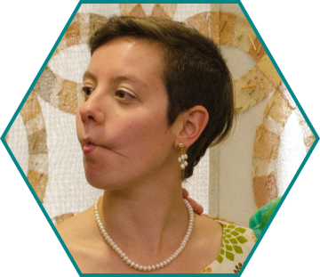
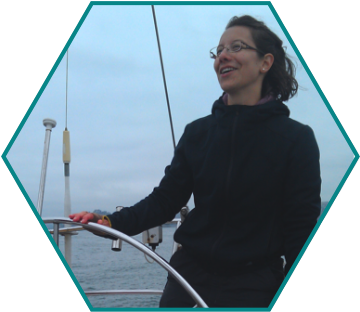

About Mari
Highly-organized woman-in-tech looking for interesting puzzles to solve that will make a positive impact on the world. My artistic upbringing instilled a keen eye for aesthetics and creative solutions, and I am now interested in turning those talents to creating efficient ways for people to move through spaces. Always willing to dig deeper to find the roots of problems, I bring a collection of abilities that open new perspectives, both globally and at the implementation level. I specialize in creative thinking and problem-solving, with a strong emphasis on accuracy and efficiency.
I am hoping that my next move will take me in a direction to assist with positive, global, social change.
As a short person, I stand on many soap boxes. A partial list, in no particular order :
- access to education
- climate change
- medicine and vaccination
- human rights
- digital rights
- intellectual property
- the intersection of arts and technology
- wilderness survival
- outdoor exploration
- experiential learning
- music and dance
- how access to the arts will save humanity
- the best empathy-building exercise is to work retail
- everyone should work in a commercial food space at some point

After attending the innagural event in 2014, I volunteered as the Curation Co-Lead for FIGMENT Oakland for 2015. I was responsible for internal-facing organization, communication, workflow optimization, documentation, etc to support a team of curators. Also assisted with on-boarding and coordinating artists for the event, along with all the other Curation volunteers. Herd cats. Write documentation. Explain documentation. Help with everything.
One- and two-day volunteer stints. Assist with project set-up in the morning, registration and check-in, maintain order throughout the day, answer questions and guide exploration, and generally be present as a female engineer role model. Program ended fall 2015.
NewCo Festival - San Francisco
I assisted with day-of presentation for Host Companies around San Francisco on the day of the festival in 2014. Host Company Ambassadors were on hand both as a NewCo representative and set-up assistance for each assigned company.
Ardent Heavy Industries
Contributing volunteer member of this industrial arts collective since summer 2013. Our best-known works are Dance Dance Immolation (in the Guinness World Records as "World's Hottest Videogame"), 2πr (a blisteringly interactive large-scale fire toy), the Ardent Mobile Cloud Platform (a glowing pixelated cloud that will rain on your parade), and Straightedge (a 2.7mi long visualization of the curvature of the earth).
it was on fire when i got here
i am the cavalry
I am currently volunteering for this grassroots organization bringing together security researchers and manufacturers of devices with embedded computers to address the implications for public safety. My work has included editing, design, and layout.
Cal Sailing Club
The Cal Sailing Club is a non-profit, volunteer-run sailing and windsurfing club that offers lessons, recreation, and free programs for the general public and for summer programs. The club's programs for the general public and organized groups include Introductory Sails, land sailing school (in cooperation with the Nature Center and the Pegasus Project), summer sailing for youth groups, windsurfing seminars, lectures, and clinics.